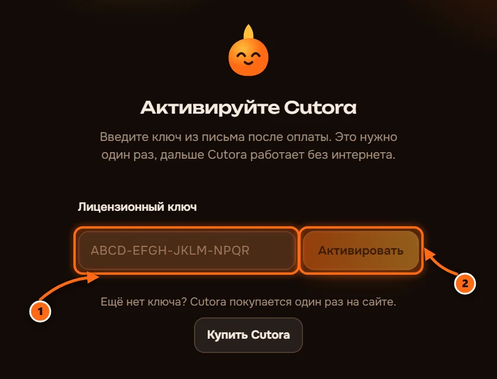
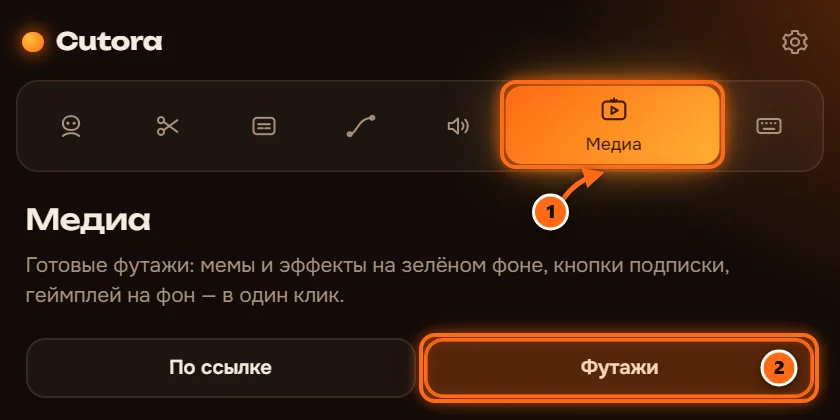

Установка Cutora
Шесть коротких шагов, около пяти минут. Понадобится письмо, которое пришло после оплаты.
Откройте письмо от Cutora
В нём ссылка на скачивание и ваш ключ. Сохраните ключ, он понадобится на шаге 5.

Закройте Premiere Pro
Установщик добавляет Cutora в Premiere, поэтому на время установки Premiere должен быть закрыт.
Запустите установщик
Откройте скачанный файл и следуйте шагам. Внутри всё, что нужно Cutora: панель, распознавание речи и инструменты для видео. Установщик на английском: примите соглашение («I accept the agreement»), затем нажмите Next и Install.

Введите ключ
Вставьте ключ из письма и нажмите «Активировать». Интернет нужен один раз, дальше Cutora работает без него.

Скачайте пак футажей
По желанию. Клипы с зелёным фоном и геймплей, около 1,7 ГБ. Откройте «Медиа», затем «Футажи» и нажмите «Скачать». Можно сделать в любой момент позже.

Требования: Windows 10 или 11, Adobe Premiere Pro 2022 или новее.
Если что-то пошло не так
Cutora нет в меню Окно, Расширения
Перезапустите Premiere Pro после установки. Если панели всё ещё нет, запустите установщик ещё раз и проверьте, что у вас Premiere Pro 2022 или новее.
Windows пишет «Система Windows защитила ваш компьютер»
Нажмите «Подробнее», затем «Выполнить в любом случае». Windows показывает это для новых программ, которые видела ещё редко.
Ключ уже используется на двух компьютерах
Напишите в поддержку с той почты, с которой платили, и мы освободим место для нового компьютера.
Premiere Pro у меня на другом языке
Названия меню переведены, в русском Premiere это Окно, Расширения. Cutora говорит на языке Premiere, а сменить язык можно в её настройках.
Как удалить Cutora?
Откройте Параметры Windows, затем Приложения, найдите Cutora и нажмите «Удалить».